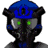

ナレーション 「時に宇宙世紀２５６年。支配層と被支配層の争いは熾烈を極めた。その戦いの中で、多くの戦士達が死に、そして生き残った者たちは、新たなる戦いの舞台となる地球へと降り立った」
 兵士 「奴の所在はハッキリした！ 態勢を立て直してもう一度だ！」
兵士 「奴の所在はハッキリした！ 態勢を立て直してもう一度だ！」
 アベル 「ひ、引いてくれた・・・？」
アベル 「ひ、引いてくれた・・・？」
兵士 「フン・・・。これは戦略的撤退だ。間違いなく奴は孤立無援。手持ちの武器もない。相手がいくら救世主でも、この状況は覆せん！」
アーティカ 「アベル君！」
タイトル
|
− 1 VS 3000 − |
地上に降り立ったエドガー一行の戦闘。
 兵士 「いくら性能差があるとは言え・・・！ たった２機に圧倒されてるだと！？ クソっ」
兵士 「いくら性能差があるとは言え・・・！ たった２機に圧倒されてるだと！？ クソっ」
 ザカリア 「おっと！ ・・・へっ、地球圏にゃ、ロクな相手がいないと思ってたけどよ！ ヘボいマシンの割に、楽しませてくれるじゃんよ・・・ッ！ オラッ！」
ザカリア 「おっと！ ・・・へっ、地球圏にゃ、ロクな相手がいないと思ってたけどよ！ ヘボいマシンの割に、楽しませてくれるじゃんよ・・・ッ！ オラッ！」
 エドガー 「ふン。少しは重力下での戦闘に慣れたか」
エドガー 「ふン。少しは重力下での戦闘に慣れたか」
ザカリア 「へっへ。おっさん！ 今のウチに先生ヅラしとけよ」
ザカリア （言っとくけど、俺ァ今、確実にアンタへと近付いてる。ここ最近、間違いない手応えがある・・・ッ）
エドガー 「威勢がいいな。自信が付いたなら、いつでも寝首を掻けばいい。今すぐにでもな」
ザカリア 「ッ！？ ・・・っと、今は遠慮しとくぜ。まだ適わない事がわかるぐらいには成長したんでよ！」
エドガー 「くっく。そいつァいい・・・」
洋上。海洋拠点を叩きに行くアベルのギルティ。
アベル 「重力下での戦闘に慣れてないにしたって、動きが悪すぎる・・・何でだよ。武装もないのに、こんなんじゃ、戦えないよ。・・・ん？ 機影？」

パイロットＡ 「報告通りだ。目標発見。これより迎撃体勢に入る。フォーメーションを展開しろ」パイロットＢ 「了解。状況開始。・・・いくら救世主サマと言えども、たった１機で何が出来るってよ」
パイロットＡ 「油断はするな。マシンにしちゃ相当な速度だ」
パイロットＢ 「とは言っても所詮はマシン。この状況下じゃ、圧倒的に戦闘機が有利ッ！ 可愛がってやるぜ！」
アベル 「もう発見されたの！？ どうにか・・・！ 撃って来た！」
パイロットＢ 「へっへ。粉がなきゃ、マシンなんかで戦闘機の相手がつとまるかよ」
パイロットＡ 「ファイア」
アベル 「動きを何とかしなきゃ・・・！ 何か・・・ッ」
パイロットＡ 「いい反応だ。だが、本命はこっち。バルカンじゃない」
アベル 「追尾ミサイル！」
パイロットＢ 「よっしゃあ！ ・・・水中に逃れた！？」
パイロットＡ 「油断するな。何しろ相手はウワサの救世主様だ」
アベル 「避けたのはいいけど・・・水中じゃ、もっと動きが悪い・・・。これじゃ・・・、このまま・・・」
パイロットＡ 「いつまで潜ってる？ さっきの水中戦じゃ、痛い目を見たんだろ？ 苦しいか？ ・・・さあ、息継ぎしに顔を上げな」
アベル 「そうか。自動制御システムが未対応なのか。道理で・・・」
アベル 「・・・水中どころか、重力下戦闘用のデータがない。システム本体が動きを鈍くさせてるのか。だったら・・・」
パイロットＡ 「さあ！ 顔を上げなすった！」
パイロットＢ 「なに！？」
アベル 「動ける！ 思ったとおりだ！ 制御レベルを下げた方が動ける！」
パイロットＡ 「さすが、か？ 隊列崩すなよ！ もう一度だ！」
アベル 「いける！？ ううん・・・、まだ鈍い。もう少し・・・」
パイロットＢ 「今度は逃がさねぇッ！ なんッ！？」
アベル 「動ける・・・。これなら・・・ッ」
パイロットＢ 「なんだとォ・・・ッ！？」

パイロットＡ 「戦闘機を切り伏せただと・・・！？ 化け物かッ！？」
アベル 「これなら戦える！」
アベル 「３つめ！」
パイロットＡ 「くそっ！ 止むをえん！ 撤退しろ！ 速度だけなら追いつかれる事はない！」
アベル 「逃げてくれるならッ！ このまま一気に海洋部隊を叩く！」
パイロット 「よし。いい子だ。付いて来い。・・・救世主がどれほどの化け物でも、海洋部隊３０００の兵を相手に１機ではどうする事も出来まい。多勢に無勢って事を教えてやるッ」
アベル 「見えた・・・っ！ あれが・・・」
海域駐留部隊。
 司令 「ふン。落し物が自らノコノコやって来るとはな・・・。全軍に通達！ 迎撃体勢を取れ！ 相手はあの救世主だ！ 議会軍海洋部隊の威信にかけて、敵機を沈めろ！ 鹵獲すれば昇格は保障されるぞ！」
司令 「ふン。落し物が自らノコノコやって来るとはな・・・。全軍に通達！ 迎撃体勢を取れ！ 相手はあの救世主だ！ 議会軍海洋部隊の威信にかけて、敵機を沈めろ！ 鹵獲すれば昇格は保障されるぞ！」
 隊員 「は。全軍に通達！ 第一種戦闘配備！」
隊員 「は。全軍に通達！ 第一種戦闘配備！」
司令 「海中にはＵＺ。海上には戦艦。空には無数の戦闘機・・・。逃がさんぞ。いくら救世主であろうともな」
隊員 「来ます。迎撃距離圏内まで残り２分」
司令 「マシンと戦闘機の出撃を急がせろ！ 迎撃！ 砲弾を撃ち尽くすつもりで行け！」
アベル 「来た・・・！ けどっ！ 単なる大砲なら充分にかわせる！」
 兵士 「ふん。さすがに小型機。大砲が当たってくれるほど甘くはないか？ よぉし！ 追尾ミサイルを混ぜるぞ！ 相手は１機だ！ こっちに分がある！ 間違っても粉は撒くなよ！？」
兵士 「ふん。さすがに小型機。大砲が当たってくれるほど甘くはないか？ よぉし！ 追尾ミサイルを混ぜるぞ！ 相手は１機だ！ こっちに分がある！ 間違っても粉は撒くなよ！？」
アベル 「まだ少し鈍い？ もう少し・・・っ！」
アベル 「やっぱり追尾ミサイル！ でも！」
司令 「あの弾幕の嵐を・・・進むだと？」
隊員 「せ、接触まで、２分切りました！」
司令 「馬鹿な。どうやって・・・」
隊員 「どうやら、誘導兵器は撃ち落されてます・・・。爆発の熱源を利用してます。加えて、時折バーニアを切ったりして、目を眩ましているようです」
司令 「熱源探知以外にも、ＡＲＨや可視光追尾もあるだろう！？」
隊員 「それを悉く潰されてるんです。それも、前進しながら！」
司令 「何と言う・・・。これでは大砲至上主義で敗れた歴史の再現ではないか。・・・航空部隊とマシンの準備は出来てるな」
隊員 「はい。既に配備済みです」
司令 「だが、こちらには水中と洋上のマシンがある。これならば多勢に無勢・・・。ましてあちらには武器がない様子・・・」
アベル 「よしっ！ たどり着いた！」
 兵士 「怯むな！ 相手は一機だ！」
兵士 「怯むな！ 相手は一機だ！」
アベル 「撃ってくるなら！」
兵士 「艦を盾に！？」
アベル 「そうだ・・・。あの時の・・・」
エドガーに翻弄された戦闘の回想。
アベル 「環境を、味方につける・・・！」
兵士 「無闇に撃つな！ ＵＺ部隊！ 艦に上がって取り囲め！」
兵士 「かわせるかよ！」
アベル 「ッ・・・！」
兵士 「ＪＡＣが乗っ取られるだと！？」
アベル 「格闘戦だったら！」
兵士 「囲め！ 逃がすな！ 数で押せ！」
アベル 「くっ、駄目か！？」
アベル 「これなら！」
兵士 「何だこれは・・・！？ 悪夢か！？ 何なんだ一体・・・っ！？」
島。電子双眼鏡を見るアーティカとパルタガスのメンバー。
アーティカ 「一機で海洋部隊と戦うなんて、ひどい無茶・・・と思ったけれど」
 ゲリラ 「それ以上の無茶だった訳か、救世主とやらは・・・」
ゲリラ 「それ以上の無茶だった訳か、救世主とやらは・・・」
アーティカ 「一騎当千の体現ね。・・・とは言え、さすがに厳しそうよ」
ゲリラ 「微力だが、控えさせてる連中を、応援に出すか」
アーティカ 「それは止めた方がいいわね。間違いなく足手まといになるわ」
ゲリラ 「言ってくれる・・・。が、おそらく事実だな。俺らの戦闘力は知ってるつもりだ」
アーティカ 「でも、何かアクションを起こして、連中の注意を散らせる？」
ゲリラ 「俺も同じ事を考えた」

アイキャッチ「Ｇ−ＧＵＩＬＴＹ」
ザカリア 「ふィー、終わった終わった」
エドガー 「ふン」
ザカリア 「しっかし、思ったより地上のレジスタンスってェの、根強いのな」
エドガー 「衛星軌道に、反体制派が集結してる。降下も始まってるらしいな。しばらくは、仕事に空きがなさそうだ」
ザカリア 「へっ、そりゃいい。アベルに会うまで、退屈しなさそうだぜ」
ザカリア （おっさんにはまだ適わないとしても・・・、今の俺なら、アベルとは対等以上にやれるはず・・・。やってやる。アベル！）
アベル 「これで！」
司令 「馬鹿な・・・。マシン１機に、戦艦が沈められるだと！？ 完全な飽和攻撃状態なんだぞ！？」
隊員 「壱番艦ブラン・ブリュン沈黙！ 目標！ 弐番艦に取り付きました！」
司令 「通達しろ！ 鹵獲は考えるな！ 何としてもヤツを止めるんだ！ ステーションには絶対に近づけるな！」
隊員 「全軍に通達！ 目標の破壊を最優先しろ！ 鹵獲は考えるな！ ステーションを死守しろ！」
アベル 「はあっ！ はぁっ！ これでやっと１隻・・・！？ どうにか使える武器も手に入れたけど・・・っ」
 兵士 「へっへ、こういう乱戦じゃ戦闘機は役立たずだがな・・・。こっちにゃローター機ってモンがあるんだぜ。・・・死にな！」
兵士 「へっへ、こういう乱戦じゃ戦闘機は役立たずだがな・・・。こっちにゃローター機ってモンがあるんだぜ。・・・死にな！」
アベル 「ッ！」
兵士 「かわした！？ この乱戦の中で狙撃を！？ 馬鹿な！？」
兵士 「・・・偶然だ。今度こそ死ねッ！」
アベル 「そこっ！」
兵士 「んなッ！？」
アベル 「はあっ・・！ はあ・・っ！ これじゃ・・・さすがに・・・！ え！？」
隊員 「３時！ 洋上に敵機！ 多数です！ な、い、１時にも！？」
司令 「何だとォ！？ ヤツ一機じゃないのか！？」
隊員 「は、いえっ！ さすがに、ばっ、バルバロイどもの援軍かと思われますが・・・っ！」
司令 「ちっ、ゴミめらが・・・。囮のつもりか？ ふン。そっちは無視でいい！ とにかくヤツを最優先に考えろ！」
隊員 「はっ、しかし、万一・・・」
司令 「くっ、戦闘に参加できてない連中を少し回せ。それで充分だ」
隊員 「はい！ ローゲンマイヤー隊！ ３時の敵機、迎撃に回れ！ ・・・なに！？ なんだと！？」
司令 「今度は何だ！？」
隊員 「８時の方角に突如、敵機が現れたそうです・・・！ そ、それも・・・既に戦闘空域に・・・」
司令 「馬鹿な！ レーダーは！？」
隊員 「わ、わかりません！ しかし！」
司令 「どうなってる・・・」
ゲリラ 「へっ、こんなのでも役に立ってればいいけどね・・・」アーティカ 「ただのダミー・バルーンだけど、これで連中が少しでも混乱してくれれば」
ゲリラ 「ま。俺らじゃ戦力外もいい所だからな。やっこさんが近付いてくればしめたモンだ。あとは撤退の一手」
アーティカ 「高速艇と迫撃砲の連中も、うまくやってくれてればいいけど・・・」
ゲリラ 「あいつらだって、正規の軍隊に敵わないことぐらいは知ってるって」
アーティカ 「無責任だけど、あとはアベル君に頑張ってもらうしかない、か」
アベル 「何でかわらかないけど、指揮に乱れが出てる・・・！ これでふたつ！」
隊員 「弐番艦、沈黙しました・・・。目標、来ます！」
司令 「馬鹿な・・・。３０００対１だぞッ！？」
アベル 「もう少し！ ここの司令塔さえ叩ければッ！」
隊員 「まだ、明確な報告はありませんが、援軍はおそらくダミーです」
司令 「ちっ」
隊員 「しかし、確実に指揮系統は乱れ、圧倒的戦力を前に、兵士の士気は落ちています・・・」
司令 「く・・・」
隊員 「ならば、持久戦。・・・それしかありません」
司令 「なにィ？」
隊員 「あるいは、カミカゼの決行です」
司令 「貴様ッ」
隊員 「自軍のテリトリーでは思うように攻撃できません。格闘戦でさえ、数に勝る力です。狙撃は見事に回避され、我々に残された手は、それぐらいです」
司令 「道連れに爆破、か」
隊員 「それか、持久戦でしょう。あのマシンが桁違いでも、パイロットの体力は確実に消耗されているはずです」
司令 「く・・・。自決なら、最後でも出来る。持久戦に切り替えろ。それと、万一の事態を考えて、海底資源採掘を休止させろ」
隊員 「は・・・」
アーティカ （戦闘は、昼近くまで続いた）
ゲリラ 「おい！ 聞けよ！ 奇跡的に、戦死者３名だぜ？ ３名でこの戦利品だ！」
アーティカ （私たちの霍乱がどの程度の効果をもたらしたのかはわからないけど、アベル君は長時間にわたる戦闘を戦い抜き、そして、勝利した）
ゲリラ 「見ろよ！ あの連中が撤退だぜ・・・。考えられねえ・・・」
アーティカ （私たちの恐れた、基地ごとの自爆という最悪の事態は避けられ、駐留部隊は撤退。ステーションはもぬけの殻・・・。ほとんど機能しなくなっているであろう、拠点は、同志たちによって制圧された）
ゲリラ 「お、来た来た！ ・・・って、なんだ！？ 子供じゃねえか！」
歓声とどよめき。
アーティカ 「アベル君！」
アベル 「あのっ、ありがとうございます。今回の戦闘も助けてもらっちゃって・・・」
アーティカ 「馬鹿ね。お礼を言わなきゃならないのはこっちの方よ。あなたがいなきゃ、戦闘にさえなってないのに」
アベル 「でも、戦闘なんてない方がいいですよ。ホントは」
アーティカ 「ふふ。・・・武器は補充出来そう？」
アベル 「はい。お陰様で」
アーティカ 「いっちゃうのね・・・。お仲間さんと合流できる事、祈っておくわ」
アベル 「ありがとうございます」
アーティカ 「だから、お礼を言うのはこっちだってば。・・・あ、出てく時は、こっそりでお願いね。救世主がいないってバレたら、一瞬で接収し返されちゃうから」
ゲリラ 「違ェねえや」
アベル 「はい。気をつけます」
アーティカ 「何にしろ、今夜ぐらいはゆっくり休んでいきなさい。あれだけ暴れまわったんだから・・・」
アベル 「あ、お、お言葉に、甘えます・・・」
 バーナバス 「ふぁア・・・。まだ眠いぜ。地球の大気ってのは、眠くなる成分でも入ってるのか？」
バーナバス 「ふぁア・・・。まだ眠いぜ。地球の大気ってのは、眠くなる成分でも入ってるのか？」
 イブレイ 「・・・相変わらず、空気が臭いな。地上と言うのは・・・」
イブレイ 「・・・相変わらず、空気が臭いな。地上と言うのは・・・」
バーナバス 「一部の金持ちは、天然モノがイイなんて言うがねェ・・・。俺にゃセツルメントが合ってるぜ」
 パーチ 「どっちでもいいさ。・・・来たぞ」
パーチ 「どっちでもいいさ。・・・来たぞ」
イブレイ 「・・・この度は、お悔やみを申し上げます。心身共におつらいところ、わざわざご足労願いまして・・・」
パーチ 「ジュゼッペ・ディベラ特使・・・！」
バーナバス 「親父さんのご登場、か」
 ジュゼッペ 「挨拶はいい。娘は・・・」
ジュゼッペ 「挨拶はいい。娘は・・・」
イブレイ 「アリスタリウス防衛線にて、戦死なさいました。残念ですが、ご遺体は大気圏突入の際に。ボイスレコーダーは、回収を急がせています」
ジュゼッペ 「・・・そうか。それで・・・、報告にあった・・・」
イブレイ 「Ａ・Ｊ・ダグラスの叛乱と海賊、ですね」
ジュゼッペ 「・・・連絡したとおり、暫定的にではあるが、私の権限で、きみに指揮権を与える。総力を尽くして、その海賊狩りに当たりたまえ」
イブレイ 「了解しました」
ジュゼッペ 「なお、海賊は既にベアデン工場と、西海洋駐留部隊を襲撃している。きみの戦果に期待しているよ」
イブレイ 「は。必ずや」

ナレーション 「仲間との合流を目指すアベルの前に、新たなる敵。一方で、ザカリアはついに、最強の敵と対峙する。そして、宇宙からの使者に、地上は混迷を迎えるのだった。次回、『揺れ動く世界を』 Ｇの鼓動が、今目覚める」